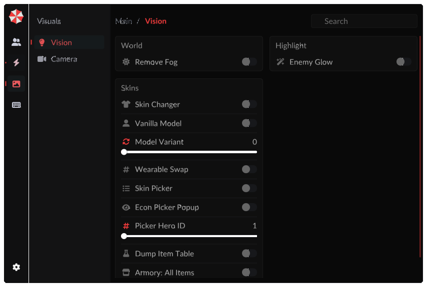
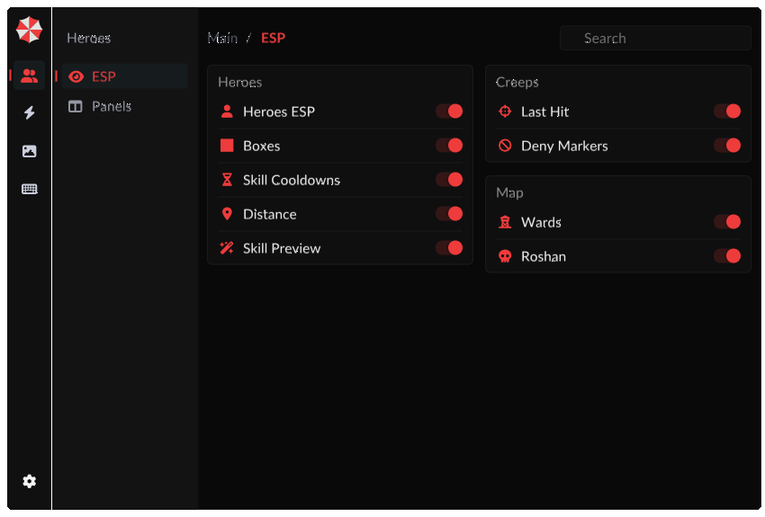
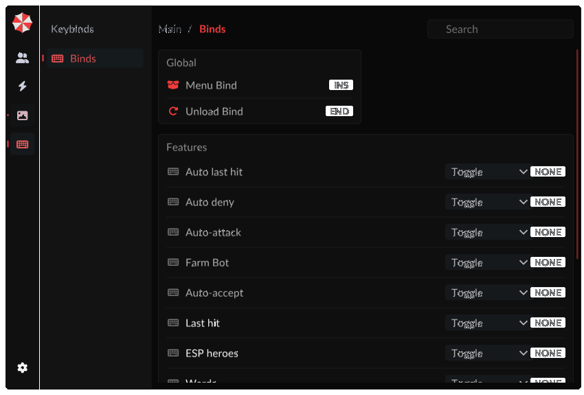
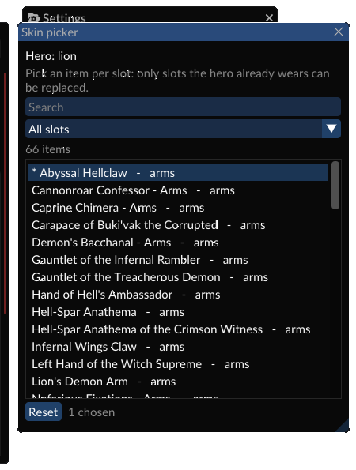

ESP
Герои, рамки, кулдауны способностей, дистанция, превью скиллов. Отдельно — варды, Рошан и крипы.
героикдварды
Оверлей для Dota 2: ESP, автофарм, комбо Инвокера, мини-HUD и скины, которые живут только на твоём клиенте. Без лаунчеров, без аккаунтов, без единого пакета наружу.

Готовая DLL под текущий клиент Dota 2. Инжектор в комплект не входит — подойдёт любой, который умеет работать с 64-битным процессом.
Каждый переключатель — это конкретное действие на клиенте, а не картинка ради скриншота. Всё настраивается с клавиатуры и мыши прямо в оверлее.
Герои, рамки, кулдауны способностей, дистанция, превью скиллов. Отдельно — варды, Рошан и крипы.
Маркеры ластхита и деная, авто-ластхит, авто-денай, авто-атака и фарм-бот по своему лесу с возвратом на фонтан.
Одна кнопка на прокаст: сферы, вызов, скиллы — в нужном порядке. Скорость каста регулируется ползунком.
Подмена defindex у wearables твоего героя, ванильная модель, варианты стилей и зеркало выбора из арсенала.
Компактная плашка в углу: FPS, пинг, выбранный скин и статус применения. Сворачивается в точку.
Шесть тем, свой акцентный цвет, масштаб, длительность анимаций, поиск по настройкам и перебайнды.
Отрисовка оверлея идёт поверх кадра игры: меню можно возить мышью, страницы листаются колесом, всё перерисовывается в реальном времени.



DLL цепляется к DXGI Present, рисует оверлей через ImGui и читает только те структуры игры, которые уже лежат в памяти твоего процесса.
Перехват Present в dxgi.dll. Оверлей рисуется в том же кадре, что и игра — без второй очереди и без просадок.
Герои, крипы, варды, кулдауны и wearables берутся из сущностей и схемы клиента. Сеть не используется вообще.
Клики уходят в окно игры сообщениями Win32, скины — записью defindex в память. Курсор физически не двигается.
Честный список — чтобы не было сюрпризов после установки.
Нужны Visual Studio Build Tools (MSVC) и Python — только для вспомогательных скриптов.
Батник вызывает cl и складывает результат в build\.
:: из корня репозитория
build.bat
:: результат
build\umbrell1ka.dllОдна копия Dota 2 — второй dota2.exe ломает рендер. Инжект — в уже живой процесс.
:: проверить, что процесс один
tasklist | findstr dota2
:: инжект любым инжектором
injector.exe --pid <PID> --dll umbrell1ka.dllINSERT — меню. Клавиша меняется на странице Binds вместе с клавишей выгрузки.
Категории слева, страницы в сайдбаре, поиск сверху. Настройки сохраняются между запусками.
END возвращает все изменённые значения и снимает хук — клиент остаётся чистым.
Внешний вид героя складывается из предметов, которые выдаёт сервер. Оверлей меняет defindex уже надетых wearables в памяти клиента — модель пересобирается локально. Другие игроки получают от сервера твой настоящий набор, поэтому видят стандартную модель. Это ограничение архитектуры игры, а не настройка.
В самом оверлее — да. Каталог скинов собран из items_game.txt целиком: 9 576 предметов по всем героям и слотам, включая платные иммортали и сеты, которые на аккаунте не куплены. Всё это можно выбрать в Skin Picker и надеть на героя — сервер и профиль при этом не трогаются.
Сетка арсенала внутри клиента Valve — другое: она строится из предметов, которые сервер прислал аккаунту. Её вид можно подменить только хуком клиентских структур UI, и это чисто косметика — предмет не станет купленным ни в профиле, ни в инвентаре.
Офсеты схемы и сущностей лежат в одном месте. Большинство патчей ломают только их — тогда обновляется таблица, а логика остаётся. Консольные команды ищутся по имени, а не по адресу, поэтому их переносить не нужно.
Нет. Клики и приказы уходят сообщениями в окно игры, физический курсор остаётся там, где ты его оставил. Камера тоже не уезжает: клики за границей безопасной зоны отбрасываются, камеру переставляет только фарм-бот.
Да. В арсенале оверлей цепляется к юниту предпросмотра, а режим «Armory Mirror» подхватывает надетый там предмет как выбор для матча.
Только для самой Dota 2. Оверлей не делает ни одного исходящего запроса: ни телеметрии, ни проверки лицензии, ни загрузки конфигов. Всё, что он читает и пишет, находится в твоём процессе.